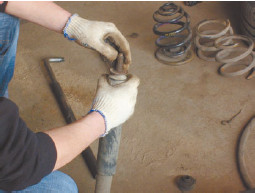
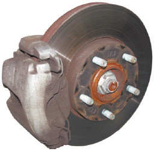
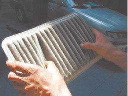
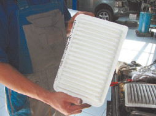

Ошибки при ремонте автомобиля
Впервые сталкиваясь с ремонтом автомобиля, немудрено и растеряться. В результате – переплаты на СТО, ремонт отнюдь не того, что действительно требует внимания, починка совершенно исправного автомобиля и т. д. Кроме того, автовладельца-новичка очень легко обмануть, и этим часто пользуются недобросовестные мастера. Главное, что такие ошибки ведут к потере денег.
Одна из классических ошибок автоновичков связана с приобретением запчастей для своего «коня». Многие начинающие водители, приобретая автомобиль, что называется, «глубоко б/у», почтенного возраста автопатриарха, считают, что такому «старичку» вполне подойдут и запчасти б/у. Особенно если машина приобреталась с целью освоиться за рулем как следует, а уж затем выбросить этот металлолом и купить что-то человеческое. Оно-то правильно, лучше «убивать» старую, дешевую машину, чем купить новенькую и дорогую и через год сделать ее грудой металла для разборки. Но даже такой «автотренажер» требует ухода и качественного ремонта – ведь ему доверяется ваша жизнь.
Однако излишне экономные новички приобретают не только подержанный бампер или крыло, но даже амортизаторы (рис. 3.1), шаровые опоры, тормозные диски и колодки! И потом очень удивляются, что автомобиль качается вверх-вниз, как ванька-встанька, несмотря на «новые» амортизаторы, а рабочая тормозная система вдруг отказывается работать (или при торможении слышится дикий визг) – и это несмотря на «новые» тормозные колодки и диски.

Рис. 3.1. Доводка амортизаторов б/у до продажного состояния
Конечно, в автомобиль, предназначенный на слом, не хочется очень уж вкладываться. Но следует вложиться в собственную безопасность, а требуемые запчасти разделить на две группы: те, которые непосредственно влияют на безопасность движения (как-то тормозные колодки и диски) (рис. 3.2), и те, влияние которых на безопасность не столь очевидно (к примеру, автомагнитола, дверцы, крылья, капот и т. д.). Запчасти из первой группы следует приобретать только новыми, с иголочки, несмотря на солидный возраст автомобиля. Ведь, купив шаровую опору б/у, вы рискуете в скором времени оказаться на дороге с вывернутым колесом, и хорошо, если эта катастрофа коснется только вас, а не произойдет весьма неприятного ДТП со многими участниками.

Рис. 3.2. Тормозной диск с колодками
Ну а если вы, приобретя подержанные запчасти из первой группы, вскоре заметите, что тормозные колодки вовсе не такие уж новенькие, как рассказывал продавец («Вчера только сняли с новой машины после аварии!»), то предъявить претензии и вернуть свои деньги все равно не сможете. На запчасти б/у гарантии не существует.
Частенько по причине экономии приобретаются детали новые, но «беспородные». А вот это – самая настоящая лотерея. Бывает, что повезет и такая запчасть будет работать не хуже дорогой фирменной. Но чаще ресурс у «беспородных» автодеталей гораздо ниже, чем у запчастей, выпускаемых известными производителями, и в конце концов экономия не окупается (разве что если требуется срочно заменить деталь с перспективой впоследствии приобрести фирменную, «долгоиграющую»). Сначала приобретается китайская запчасть, скажем, за $50. Через неделю-другую выясняется, что она не вполне кондиционная (по понятиям автомобиля), и приходится приобретать уже то, что рекомендует завод-изготовитель, за $150. Итоговая цифра составляет $200, из которых $50 – выброшенные деньги.
Одно из распространенных заблуждений касается жителей небольших городов и сельской местности: «В столице все дешевле!» Водители-новички справедливо предполагают, что многие запчасти в Москве (Питере, ближайшем крупном городе) дешевле, чем в их родном городе, и владельцы тамошних магазинов автозапчастей приобретают товар именно в крупном городе. А если поехать самому на закупку деталей, то можно сэкономить по крайней мере на магазинной наценке. Это, конечно, верно. Но следует учесть еще и стоимость дороги.
Предположим, кто-то едет по делам, скажем, в Москву и даже готов привезти оттуда вожделенную автозапчасть. Однако стоимость дороги – это отнюдь не главное. Проблема в том, что в случае приобретения автозапчасти в «родном» магазине вместе с ней выписывается и гарантия. И если вдруг с этой запчастью что-то не так (вы платили за фирменную вещь, а вам досталось китайское изделие, или запчасть не подходит вашему автомобилю – такое случается при ошибке с годом выпуска или в магазинном каталоге запчастей) либо она вышла из строя буквально через несколько недель эксплуатации, хотя должна была проработать минимум год, вы спокойно идете в тот магазин, где сделали неудачную покупку, и меняете ее на то, что вам требуется. Автор в свое время трижды заменил выхлопную систему в магазине, и только третья оказалась той, которая требуется, хотя все три в магазинном каталоге числились под данной маркой, моделью и годом выпуска.
Ну а если магазин в Москве? Тут уже гораздо сложнее совершить обмен. Или нужно тратить деньги на поездку (а тогда запчасть имеет все шансы оказаться «золотой»), или ждать очередной командировки знакомого, а в ее ожидании сидеть без запчасти. Есть еще один вариант, к которому в конце концов приходят почти все: в «родном» магазине приобретается нужная деталь, а неудавшееся столичное приобретение пылится в гараже как памятник.
Еще с одним заблуждением связаны самые большие финансовые потери при ремонте автомобиля: русский человек упрямо считает, что каждый может заниматься политикой, лечением, банковским делом и… ремонтом автомобиля. Более того, водитель-новичок, выслушав на курсах несколько лекций об общем устройстве автомобиля, обычно уже готов его диагностировать. Разумеется, есть те, кто честно признается в своей некомпетентности, но большая часть (особенно это относится к мужчинам, но встречаются и женщины) считает, что по крайней мере может дать мастерам несколько «полезных советов». Вот тут-то и кроется глубочайшая ошибка.
Во-первых, диагностика в подавляющем большинстве случаев ошибочна. Новоиспеченный владелец автомобиля убежден, что у его машины проблемы с двигателем и, более того, нужен капитальный ремонт. Он жалуется в автосервисе на то, что ему подсунули «гроб на колесах» и у него с самого начала были подозрения, что с этим автомобилем что-то не то, а мастера, конечно, соглашаются. Тем более что капитальный ремонт двигателя стоит довольно дорого, а уж если его не требуется делать – это же просто золотой заказ! И автомобиль благополучно следует в ремонтный бокс, где ему в лучшем случае вымоют двигатель. Потому что на самом деле проблемы с газовым оборудованием, которое недавно поставил владелец ради экономии. Или нужно попросту сменить воздушный или масляный фильтр (рис. 3.3).


Рис. 3.3. Старый и новый воздушный фильтр
Во-вторых, излагая свои представления о том, что же именно произошло с автомобилем, да еще со знающим видом, владелец мгновенно расписывается в том, что он недавно за рулем, это его первый автомобиль и он, собственно говоря, совершеннейший дилетант. Мастера автосервиса такой тип людей прекрасно знают, ведь они каждый день имеют с ними дело. И, увы, клиент такого рода изначально рассматривается в качестве объекта обмана: начиная с количества и стоимости запчастей и заканчивая объемом работ и стоимостью ремонта. К сожалению, честные мастера, которые не поддадутся соблазну обмануть владельца автомобиля, когда тот сам так и уговаривает, чтобы его надули, попадаются очень и очень редко.
В-третьих, владелец автомобиля, который пытается указывать мастерам, что и как они должны делать, да еще если он не разбирается в том, о чем идет речь, вызывает исключительную антипатию (что неудивительно; представьте только, что какой-то дилетант начал вас учить делать вашу работу!), что, в свою очередь, сказывается и на качестве ремонта, и на итоговой сумме счета. Иногда кажется, что в счете учтено каждое слово, сказанное заказчиком не по делу.
Поэтому гораздо лучше честно признаться в том, что вы – новичок за рулем и не разбираетесь в устройстве автомобиля. Правда, подобное признание чревато тем, что вас попытаются обмануть уже просто как новичка, причем иногда даже с самыми теплыми чувствами, даже с определенного рода соболезнованием вашим бедам и вашему незнанию элементарных автоштучек. Так что неплохо, если пару-тройку раз с вами на автосервис съездит кто-либо из «старших товарищей» – опытный водитель, который уже неоднократно бывал на СТО. Еще лучше, если вам порекомендуют какую-либо СТО и даже представят вас мастерам.
Кроме того, если честность мастера вызывает сомнения, то помните – существует множество других автосервисов, и вы всегда можете пройти альтернативную диагностику, проверив сомнительные слова мастера. И не стесняйтесь сказать мастеру, что вы отправляетесь на контрольную диагностику. Во многих случаях этого и не приходится делать, «диагноз» изменяется прямо на месте («Погодите, я еще вот там не посмотрел… Может, именно в том месте загвоздка… Ну да, я так и думал!»).